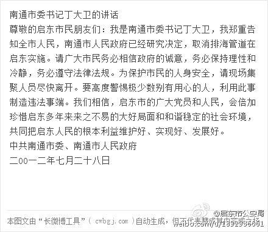

维稳高于一切//@涂--Oracle://@扬韬: 厦门，大连，什邡，启东，所有地方都一样，一旦有人聚集了，就宣布取消。数亿、数十亿甚至上百亿的工程，一句话就取消了。在中国做企业，这种风险怎么算？凭什么你们说同意就同意，不同意只要一句话取消了？当初是谁同意的，怎么同意的？如今不同意了，要谁来承担
@启东市公安局:
#南通市委书记丁大卫的讲话#尊敬的启东市民朋友们：我是南通市委书记丁大卫，我郑重告知全市人民，南通市人民政府已经研究决定，取消排海管道在启东实施。请广大市民务必相信政府的诚意，务必保持(详见长微博) ...  网页链接 （分享自 @长微博原文）
网页链接 （分享自 @长微博原文）
- 